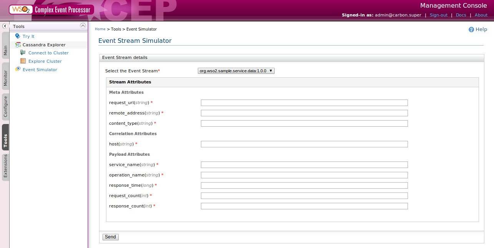

Event Simulator is a tool that can be used to simulate the Event Streams that are predefined. These Event Stream definitions has stream attributes, using Event Simulator event can be created by assigning values to the stream attributes and send as an event.
1. Start the CEP, log in to the management console , select Tools and click Event Simulator.
2.Select the Event Stream from the drop down , then enter the attribute value to the generated form

Finally click the send button then the Events are sent to any component that this Event Stream is defined such as Event adapter, Event Formatter , Execution plan and etc.
This tool can be used to debugging and monitoring the Event Input/Output adapters , Execution plans and Event Formatters.